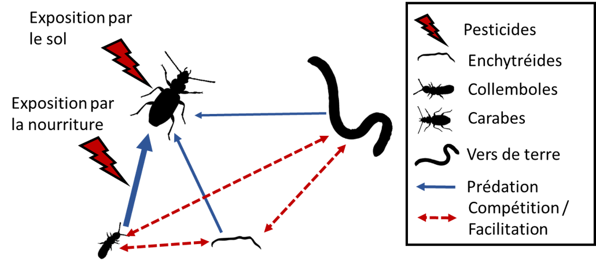
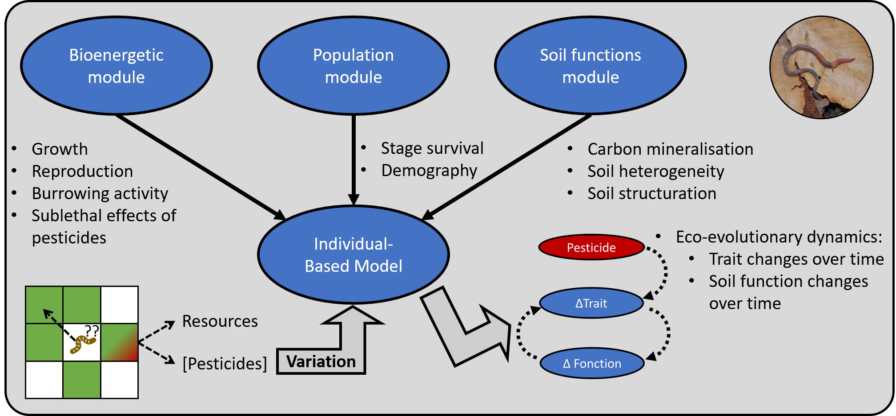
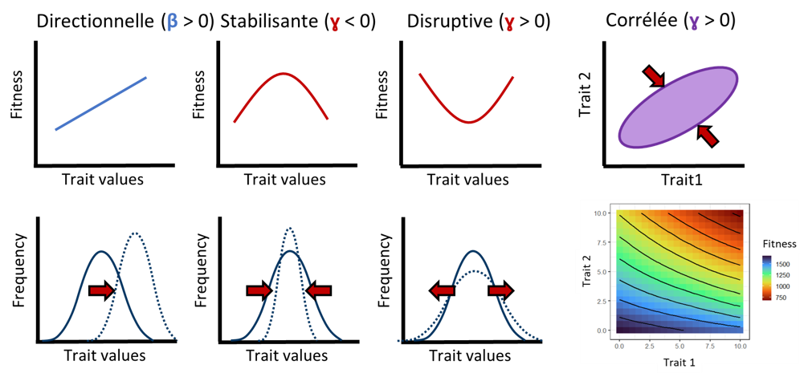
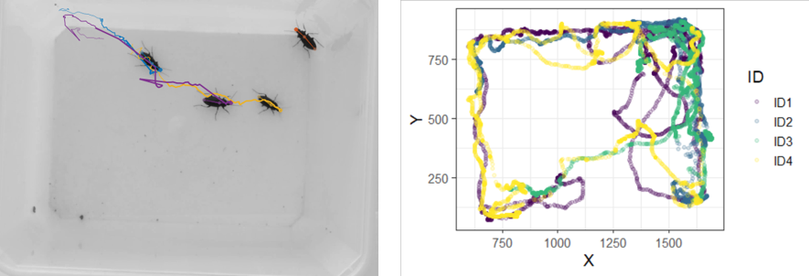

Projects
Funded projects
Effect of pesticides in simplified soil trophic networks

Soil functions are under threat due to the generalized used of pesticides in agriculture. These functions are underpinned by a complex network of interactions between soil organisms. In addition, soil organisms are frequently exposed to a cocktail of pesticide molecules rather than a unique compound.
Understanding how pesticides affect these organisms therefore requires studying how complex trophic interactions (predation, competition, mutualism) may be reshaped in presence of pesticide mixtures. To do so, new experimental approaches are needed in order allowing to evaluate pesticide bioaccumulation in soil communities and to measure its effects on species interactions. The EPIC project (Effets des Pesticides sur les Interaction interspécifiques au sein d’une Chaîne trophique simplifiée) aims to: (1) Establish new protocols for comparing pesticide bioaccumulation in mono- vs. multi-species mesocosms, (2) Determine the direct and indirect effects of pesticide mixtures on soil organisms and (3) Generate a mechanistic model of species interactions in response to pesticide stress.
Students: Perrine Legrand
Collaborators: Colette Bertrand (EcoSys) (co-PI), Juliette Faburé (EcoSys), Sophie Joimel (EcoSys), Sylvie Nélieu (EcoSys)
Funders: INRAE - Département AgroEcoSystemes
Funding Period: 2023 – 2024
Eco-evolutionary dynamics in earthworms exposed to pesticide mixtures

Soil biodiversity is an important reservoir of ecosystem services and is threatened by the wide-scale use of pesticides. Evolution plays a central role in how populations persist because ecological change and evolutionary processes interact in eco-evolutionary feedbacks. These feedbacks can decrease extinction risk by allowing rapid adaptation to environmental stressors but depend on the population density and its genetic makeup.
Despite evidence that soil fauna can adapt to pesticide exposure, key questions on the speed at which adaptation occurs and the costs for ecosystem functions remain unanswered. EEWORM (Eco-Evolutionary dynamics in earthWORMs exposed to pesticide mixtures) will investigate eco-evolutionary dynamics in populations of the earthworm Aporrectodea caliginosa, a major soil engineer in agricultural systems, exposed to a pesticide mixture representative of French agricultural soils. Our specific aims are to (1) Test whether a pesticide mixture affects life-history trait variation – a required condition for evolution to occur, (2) Estimate the relative influence of selective pressures vs. transgenerational plasticity induced by a pesticide mixture and (3) Generate an individual-based model accounting for eco-evolutionary dynamics in agricultural soils and derive their consequences for soil functions.
Students: Lisa Gollot
Collaborators: Juliette Faburé (EcoSys), Sylvie Nélieu (EcoSys), Rémy Beaudouin (INERIS), Jérôme Mathieu (iEES), Lise Dupont (iEES)
Funders: Agence Nationale pour la Recherche (ANR)
Funding Period: 2024 – 2027
Other projects and collaborations
Measuring the effects of selection using ecotoxicological assays

Evolutionary effects are frequently unaccounted for in ecotoxicological studies. As a result, we have a poor understanding on how fast wild population may adapt and at what costs on their growth and reproduction. Quantitative genetic approaches allow to determine the strength and shape of selection acting on phenotypes via the estimation of selection gradients.
Yet, these approaches are rarely used in ecotoxicological assays due to the difficulty of measuring individual fitness in ecotoxicological assays. Using historical data on nematode adaptation to Uranium exposure, we aim to better understand how contaminant exposure may alter evolutionary trajectories.
Collaborators: Rémy Beaudouin (INERIS), Benoit Goussen (IBACON)
Behavioral ecotoxicology of carabid beetles in agroecosystems

Although effects on growth, reproduction and survival are the most commonly evaluated traits in ecotoxicology, pesticides’ impact on wildlife is not limited to these endpoints alone. By acting on neuro-endocrine systems, pesticides can also alter how individuals perceive their environment and deeply alter their physiology or behavior.
Using automated-tracking technology, I aim to build better mechanistic models accounting for the effects of pesticides on behavior using a generalist carabid predator as a model system.
Collaborators: Colette Bertrand (EcoSys)
Spatially-explicit modeling of pesticide fate
A major limitation of current risk assessment for pesticide products is its reliance on a substance-by-substance assessment while neglecting the risk posed by pesticide mixtures. A further complication is that pesticides are typically applied at the landscape scale and successively within and across years. To improve on current environmental risk assessment, new exposure modelling approaches are needed that can better account for the fate of pesticides at the landscape scale and the likelihood of exposure given the ecological characteristics of each species (modes of exposure, dispersal, mobility between different habitats). Spatially-explicit models are powerful tools for achieving this vision as they can help identifying landscape features that are more likely to accumulate pesticide residues and can help infer species or groups of species that are most at risk in a given landscape context according to their ecological characteristics. The aim of this project is to determine how pesticides spread in typical vineyard landscapes accounting for how different the exposure risk for functional groups of organisms (e.g., detritivores, herbivores, insectivores…). We will soon hire a postdoctoral researcher to collaborate with us on these topics.
Collaborators: Cécile Dagès (LISAH), Marc Votlz (LISAH), Carole Bedos (EcoSys), Pierre Benoit (EcoSys), Colette Bertrand (EcoSys), Olivier Crouzet (OFB), Pierre-François Staub (OFB)
Funding Period: 2024 – 2026